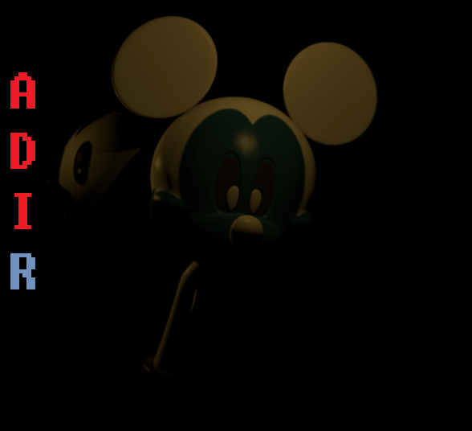
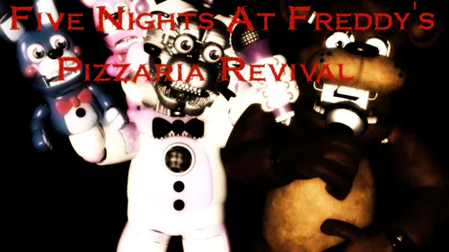
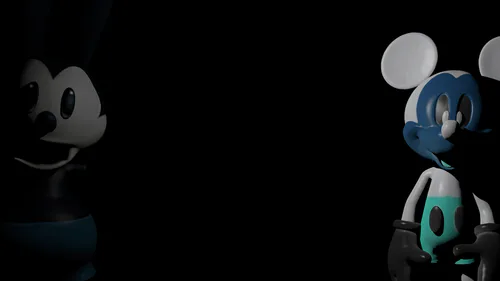
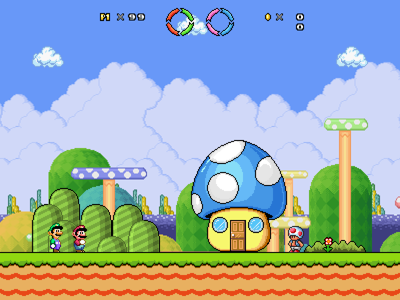

| Hub | Profile | Music | Links |
|---|
Where you can visit my Youtube channel, as long as my projects.

A complete remake of my game.
Here you can play the Normal Mode and Legacy Mode, where Normal Mode have 7 nights with Pirate Caverns, Legacy Mode have 7 nights but without Pirate Caverns and some things from Normal Mode are removed in this mode.
Also you can play the minigames. They are simple remakes of Malrat and Desko minigames: Back to Past, Floor 1 Minigame and Jeff the Killer Minigame
Playthrough of full game:
If you want to watch in separate videos and if you want to see the Alpha version of the game:

My last fan game before I went to A:DI Revamped
This game have a lot of bugs like the most animatronic didn't appear properly in cameras and when Chica comes, you need to close the left door instead of right door.

My most controversial work in here.
This game is horrible in all aspects, for you play the old versions, you need to do some configurations to play the game, or else you game will crash.
I put in link the fixed version. If you want to play the old versions, go ahead.

This project is currently in progress. You can watch in the Youtube playlist in the image link.
This is a remake of my very old 2014 episode.
Full playthrough of World 1, preview of World 2 and a preview of World 3: